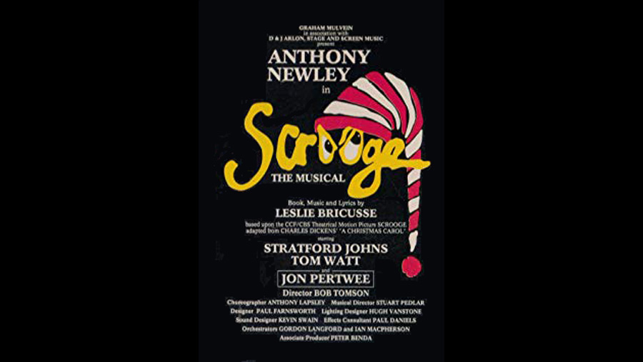

1992

CAST
Ebenezer Scrooge
-
Anthony Newley
Bob Cratchit
-
Tom Watt
Jacob Marley
-
Jon Pertwee
Spirit of Christmas Present
-
Stratford Johns
CREATIVE TEAM
Director
-
Bob Thomson
Music and Lyrics
-
Leslie Bricusse
PRODUCTION
A 1992 stage musical with book, music and lyrics by Leslie Bricusse. Its score and book are closely adapted from the music and screenplay of the 1970 musical film Scrooge starring Albert Finney and A Christmas Carol by Charles Dickens. It opened in 1992 at the Alexandra Theatre Birmingham. Bricusse was nominated for an Academy Award for the song score he wrote for the film, and most of those songs were carried over to the musical.